I led the redesign of this website across strategy, design, content, and photography. The previous platform supported internal church needs, but lacked clarity, connection, and visitor experience for new visitors.
The solution required more than just a visual refresh. We needed a website that supported both existing church members, potential new visitors, and on a system that the current team can manage on their own after the project is finished.
I proposed a completely new website. As you scroll, you will notice some of the key issues with their website:
1. This website catered to internal church need, rather than new visitors and growth. Simple questions could not be answered in a few seconds time, making the first-time user experience not ideal.
2. The CMS used prioritized speed and visual assembly over content hierarchy and interactivity. This lowers the barrier to publishing, but it shaped the site into a
long, graphics heavy scroll with limited flexibility for navigaiton, storytelling, connection, or conversion paths.
3. The navigation lacked clear pathways for different audience needs, like new visitors, parents, volunteers, life groups, etc. Without a hierarchy
of CTAs and visual direction, users were forced to endlessly scroll and figure out where they needed to go on their own, reducing the likelihood of connection or engagement.
4. Key pages like the kids and student ministry pages, functioned as forms and lacked experience factors. Where the church had an opportunity to build trust,
clarity, and familiarity, they instead had no context or warmth, and had the CTA of a form without incentive.
5. There is no connection factor or real branding. Any images seen on the website are stock photos, with one staff photo being present but it was over 5yrs old.
I worked on the rebranding of this church first, which you can read about here. Then, I got to work on the website.
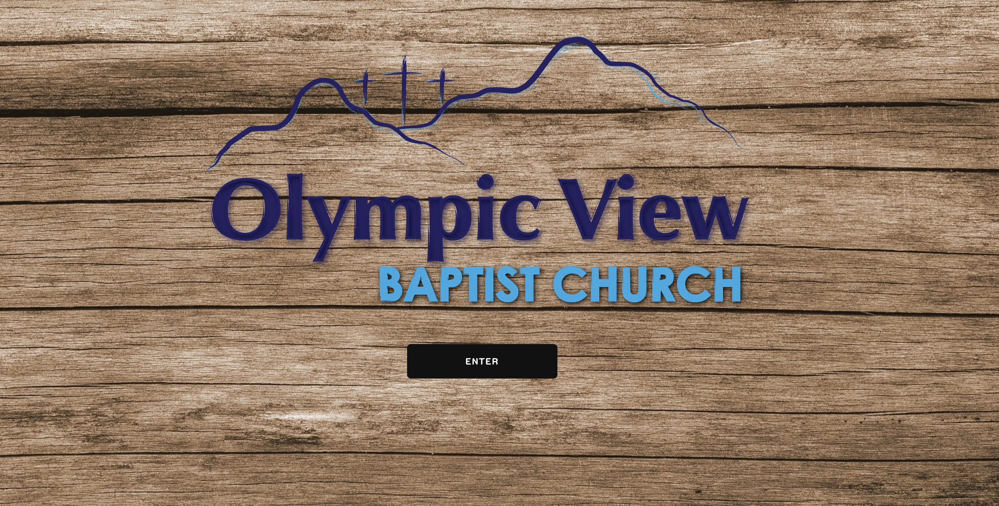
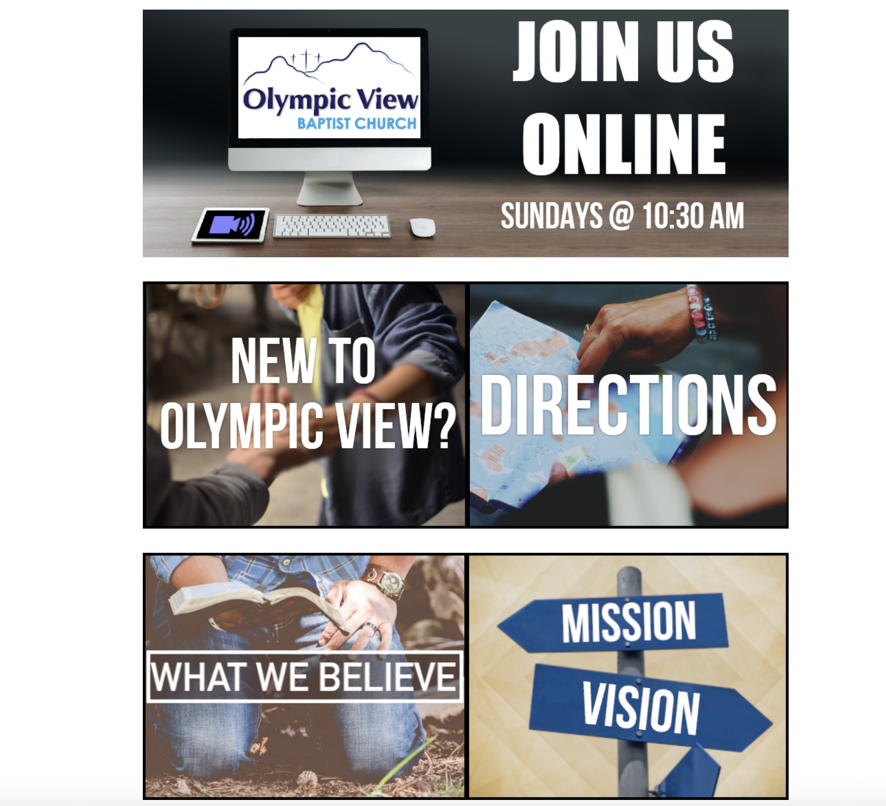
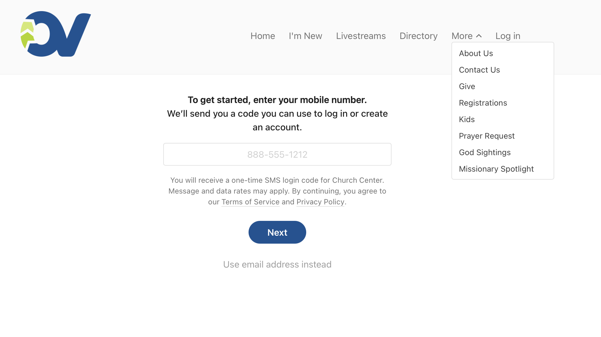
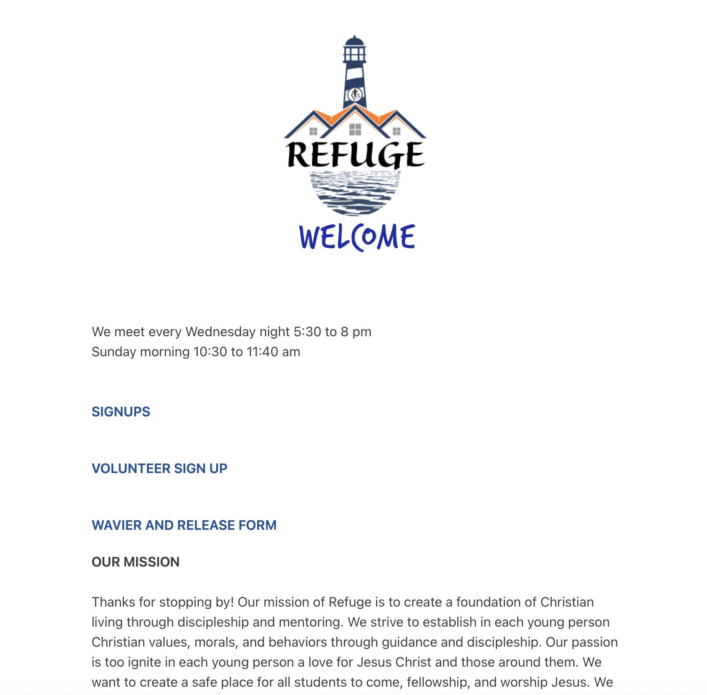
This website needed a visual refresh, yes. But, the more important aspects of this project were structural clarity, messaging, and informational architecture.
1. This website communicates exactly who they are and reflects the in-person experience. If a viewer sees this church online first, it will be consistent when they walk in the door.
2. The site now delivers information in a clear, intentional order. Instead of becoming overwhelmed or fatigued by info, the pages and pathways naturally direct them to the next step.
3. Including real people and environments through photography reduces uncertainty. Photography was captured and used to include humanity and a stroytelling aspect.
4. Tone of voice throughout was intentionally friendly, welcoming, and warm; This tone matches the new visual branding.
5. Content was structured to reduce cognitive load. Providing limited choices that are closely related to the content on screen helps guide the viewer without fatiguing them.
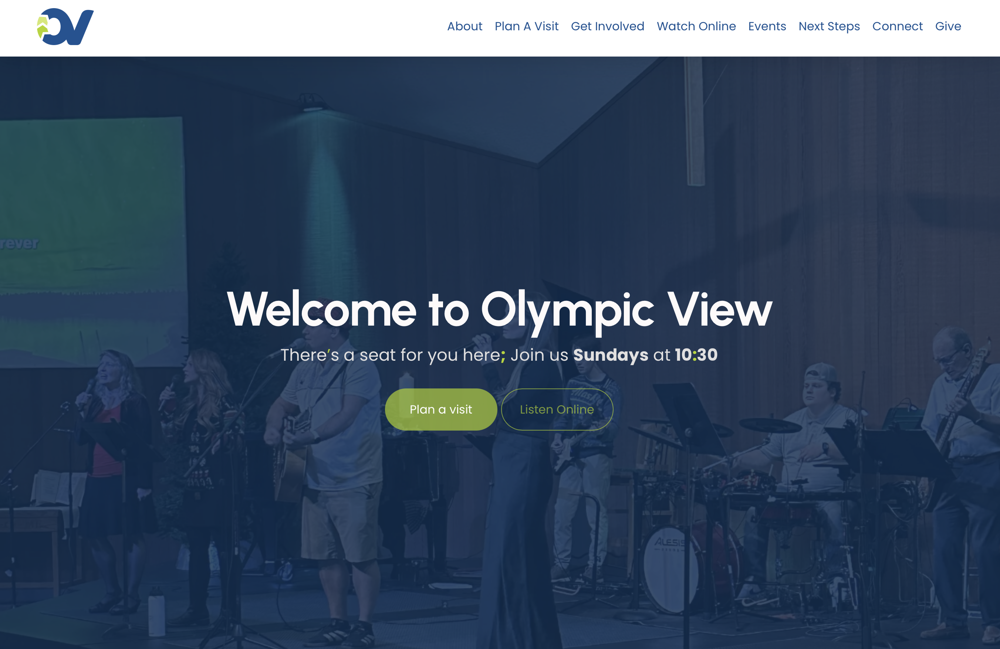
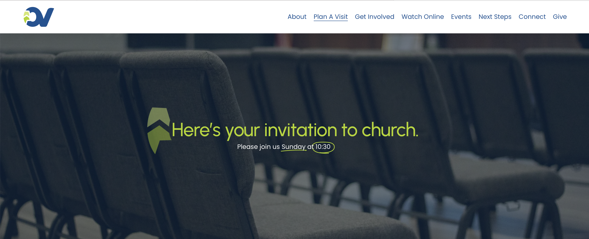
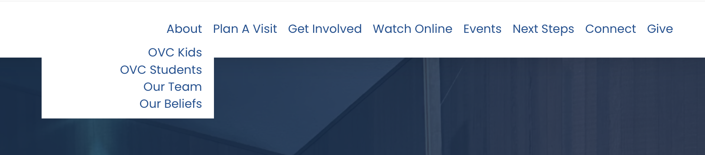
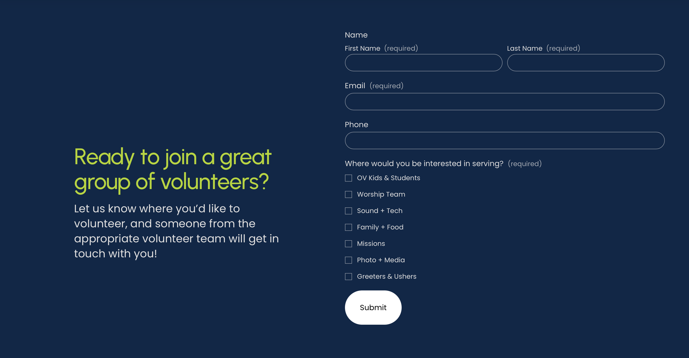
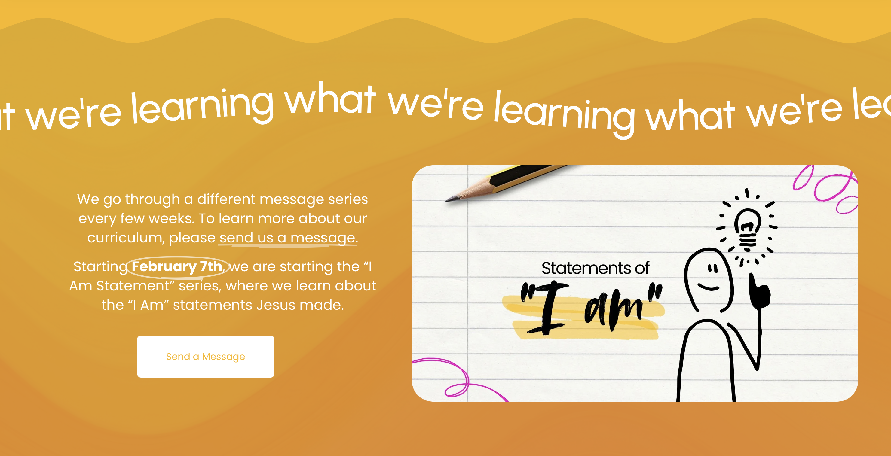
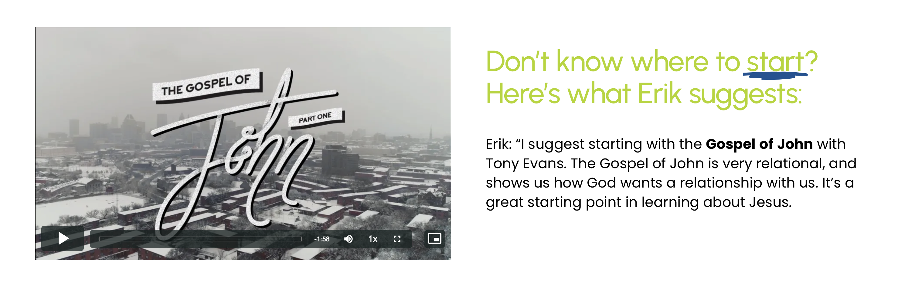
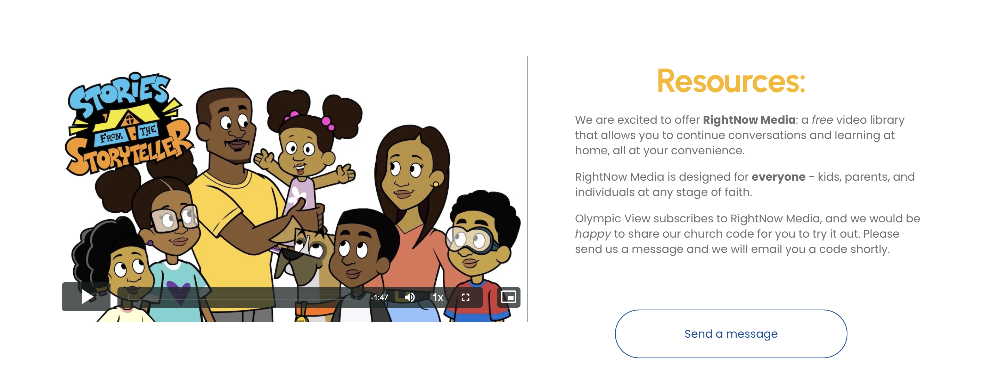
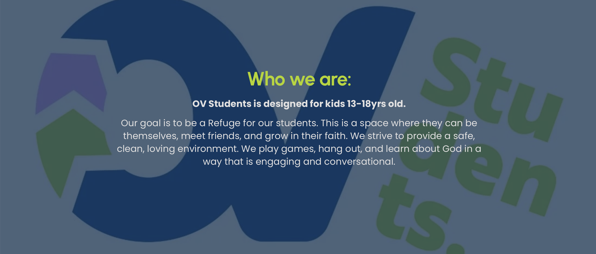
This project redefined the church website as a welcome, user-focused experience that serves both new visitors and long-time members. The final solution balances clarity, indentity, and long-term manageability for the team.